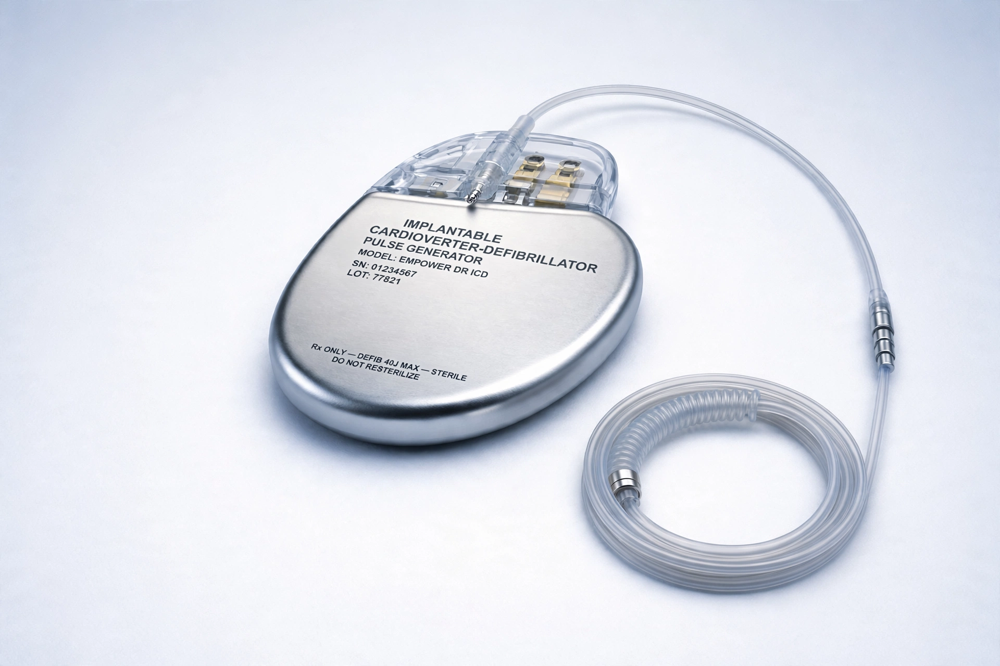

| Implantable cardioverter-defibrillator | |
|---|---|
| Synonyms | ICD, implantable defibrillator |
| Specialty | Cardiology, electrophysiology |
| Indications | Prevention of sudden cardiac death from ventricular arrhythmias |
| First human implant | 1980 (Johns Hopkins Hospital) |
| Developer | Michel Mirowski and team |

An implantable cardioverter-defibrillator (ICD) is a small battery-powered device placed in the chest to detect and stop irregular heartbeats (arrhythmias). An ICD continuously monitors the heart's rhythm and, if it detects a life-threatening rapid rhythm such as ventricular tachycardia or ventricular fibrillation, delivers precisely calibrated electrical shocks ("countershocks") to restore a normal rhythm. Many ICDs also function as pacemakers, delivering painless pacing pulses that can terminate slower ventricular tachycardias before a shock is needed, and treating slow heart rhythms. ICDs are a mainstay of prevention against sudden cardiac death in high-risk patients.
The ICD was conceived by Polish-born cardiologist Michel Mirowski after his friend and mentor died of recurrent ventricular arrhythmia. Working with Morton Mower and colleagues at Sinai Hospital of Baltimore and with the Medrad/Intec company, Mirowski developed a device small enough to implant despite widespread scepticism from the cardiology establishment. The first human implant was performed at Johns Hopkins Hospital in February 1980. Early devices required open-chest surgery to place epicardial patches; transvenous leads introduced in the late 1980s and early 1990s, and pectoral placement, made implantation far less invasive and routine.
Guidelines from bodies such as the American Heart Association recommend ICDs for secondary prevention in survivors of cardiac arrest or sustained ventricular arrhythmia, and for primary prevention in patients at high risk, notably those with heart failure and left ventricular ejection fraction of 35% or less despite optimal medical therapy. Landmark trials — MADIT, MADIT-II and SCD-HeFT — demonstrated significant mortality reductions in these populations. ICDs are also used in inherited conditions such as long QT syndrome, Brugada syndrome and hypertrophic cardiomyopathy in patients judged to be at high risk.
A conventional ICD consists of a titanium pulse generator (containing battery and circuitry) implanted under the skin below the collarbone, connected to one or more leads threaded through a vein into the heart. Systems may be single-chamber, dual-chamber, or biventricular (combined with cardiac resynchronisation therapy, CRT-D). A subcutaneous ICD (S-ICD), approved in 2012, places the lead under the skin alongside the sternum, avoiding the vasculature and heart entirely — at the cost of being unable to provide pacing for slow rhythms. Implantation is typically performed under conscious sedation, and modern devices report data remotely to clinics.
Complications include infection, lead dislodgement or failure, bleeding, and inappropriate shocks — painful discharges triggered by misread rhythms such as atrial fibrillation, which can cause significant anxiety and depression. Patients must observe precautions around strong electromagnetic fields and may face driving restrictions after shocks. Generator batteries last roughly 5–10 years, after which the device is replaced. For patients nearing the end of life, deactivation of shock therapy is an important, guideline-endorsed consideration in palliative care.